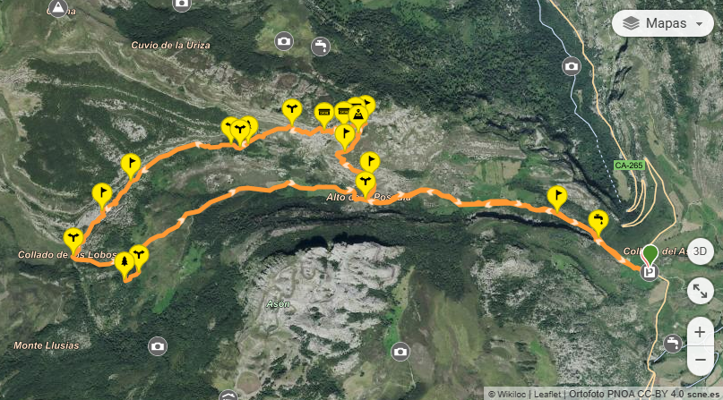
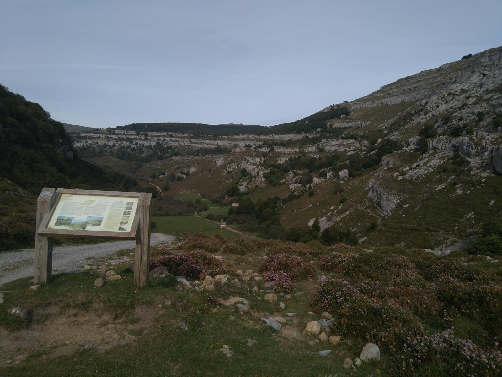

Ruta de los Collados del Asón
Estadísticas de la ruta:
| Distancia | Altitud máxima | Altitud mínima | Tipo de ruta | Dificultad técnica | TrailRank |
|---|---|---|---|---|---|
| 12,42 km | 1145 m | 683 m | Circular | Moderada | ★ 4,8 |
| Tiempo | Desnivel positivo | Desnivel negativo | Autor | Valoracion | Reseñas |
|---|---|---|---|---|---|
| 4 Horas | 735 m | 735 m | Lucia Montalvo | ★★★★★ |


Presiona aqui para ver la informacion meteorologica en la localidad de esta ruta